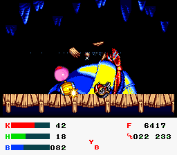

KSS Practice Changelog
Back to Main Page
9-28-23
Download
- No music
- I've been using this ROM with no music and forgot to add it back in for this patch lol. Message me if you want a patch with music. I plan to add a toggle for this in the hack later.
- Custom Respawn Coordinates with R + B, then L
- Works in almost all rooms. There are some rooms that are being annoying and I need to figure out. Cavios works, I think that's all that matters. :)
- Being on top of Wheelie doesn't set coordinates
(yet). You will need to get off Wheelie first.
- RoMK chapter select now displays the correct chapter number
- I still didn't cap the chapter count so feel free to play Nova in RoMK again.
- All rooms have checkpoints
- You can actually practice GCO now.
- Jet / Plasma status display in HUD
- Shows your charge amount for Jet and Plasma. The second number will display the charge amount when reset to zero, Plasma will not display properly if you mash fast enough. This will be fixed later.
- Quick select MWW planets with L and R
- I am currently re-using the tables that are in the game and the planets aren't in order for some reason. Thanks KSS. Will fix later.
- Also this has no boundaries set, so if you keep pressing L/R you will start reading the game code as coordinates so have fun with that.
- Spring Breeze bosses always have New Game health.
- Fixed stage select bug in Spring Breeze.
9-22-23: HUD Update rev1
Download
- Optimized various HUD display functions to severely reduce lag.
9-21-23: HUD Update
Download
- Update which primarily focuses on a new HUD that displays more accurate information, such as accurate HP, input display, and RNG numbers.

- Frame counter is still linked to score, so it is not necessarily useful for now.
- Bug fixes to 100% file. File will no longer be deleted.
- All files can now be made 100%.
9-7-23
Download
- All GCO bosses are never defeated
- Powers / Helper / Wheelie Rider state are carried through death
- Instant death is now R + Y + L
- Instant Helper death with R + Y + Select
9-6-23
Download
- Quick Select powerup, R + A + button listed below:
- Up: Jet
- Right: Wheel
- Down: Hammer
- Left: Plasma
- Select: Remove ability
- There are some graphical bugs but overall works.
- Death combo (R + A, then L), no death animation
- There are a lot of rooms, such as in GCO, that need checkpoints to be added
- RoMK timer frozen
- RoMK chapter select
- I still have yet to implement VRAM, so you will have to literally count how many times you press left/right on RoMK menu to select chapter (and there's no cap for chapter count so have fun playing chapter 17)
- RoMK cutscenes skippable (press Start, some skips don't start music properly)
- File 1 always 100% complete (even after game crashes, yipee)
Back to Main Page